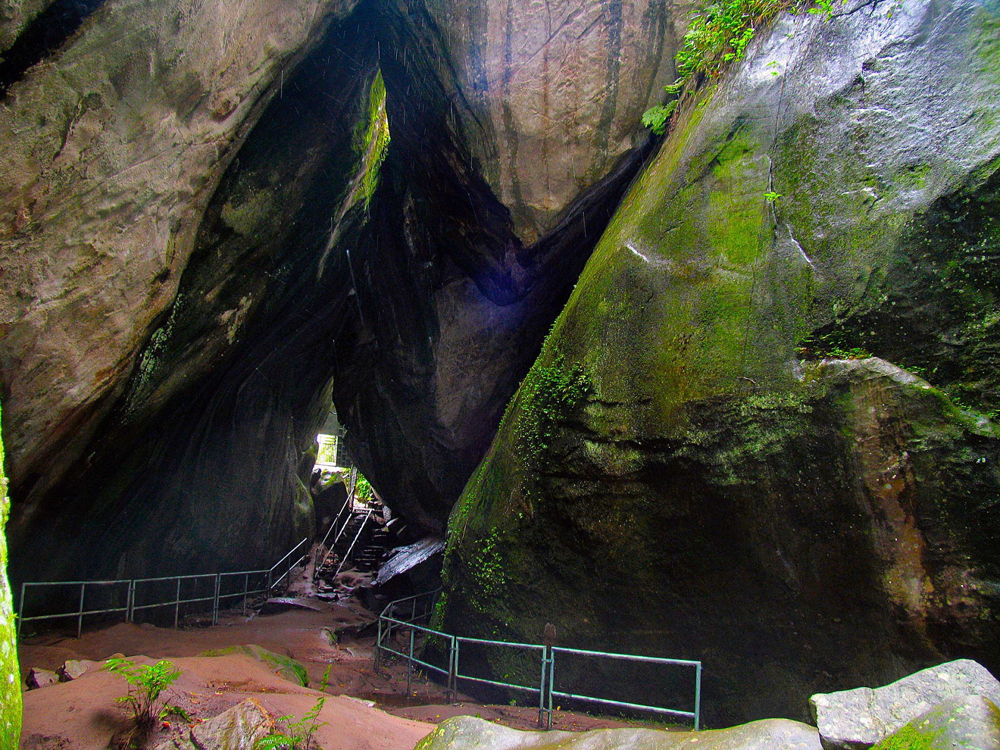
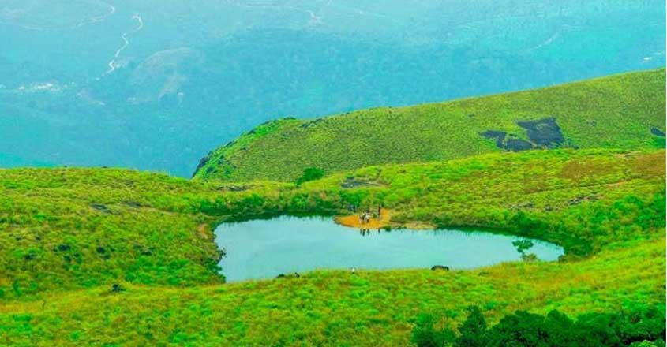
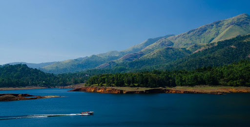
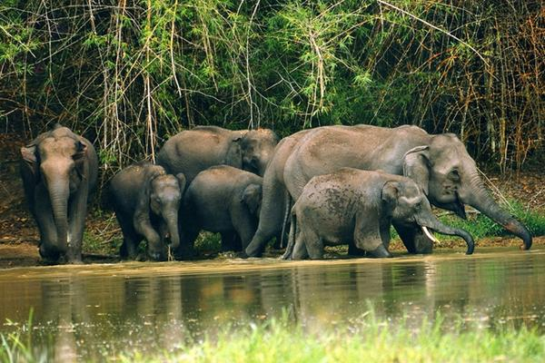
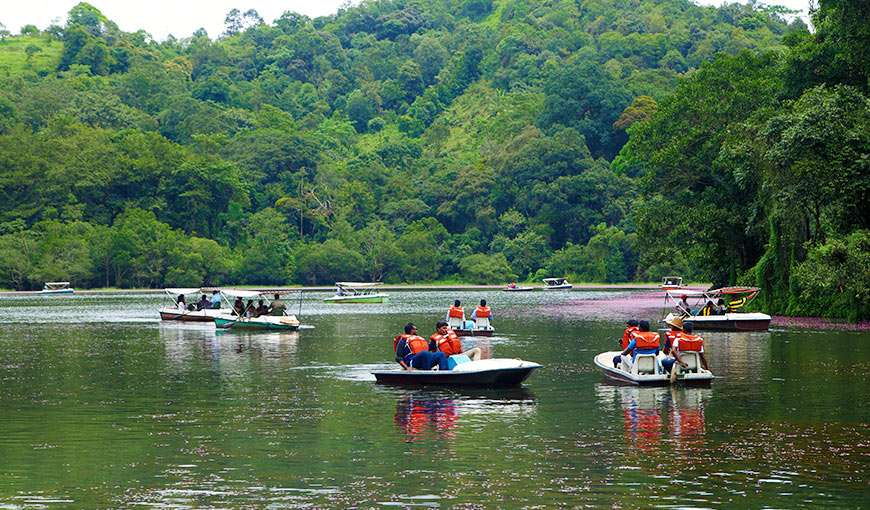

EDAKAL CAVES
Edakkal caves are well known for its pictorial depictions (cave art), which are thought to be of 6000 B C. To achieve the hollows, one needs to trek through the Ambukutty Mala. It will take around 45 minutes to climb the hill and you will never get baffled in your outing to these historical caves. Inside the cave, you can see two chambers. The lower chamber is 18 ft long, 12 ft wide and 10 ft high and the upper chamber is 96 ft long, 22 ft wide and 18 ft high. You can see animal figures and objects used by humans, on the walls of the caves.
KURUVA ISLAND
A perfect blend of different natural colours makes Kuruva Island one of the best places to visit in Wayanad. It is a protected river delta with a number of islands over the middle of Kabini River, the famous east flowing river in Kerala. The island is sprawling across an area of 950 acres with a dense population along with some rich and rare species of flora and fauna. It protects the evergreen forest ranges which provide a different ambience and thus making it an ideal choice for tourism. There are bridges made of

CHEMBRA PEAK
Looking for a weekend getaway this weekend, then head out to Wayanad and visit the famous Chembra Peak. Eight kilometres south of Kalpetta, close to the town of Meppady, lays the most elevated top in Wayanad. Chembra crest borders Nilgiri slopes in Tamil Nadu and Vallarimala in Kozhikode. This place is a perfect goal for trekking exercises. Climb up the rough landscapes of the Chembra Peak found 2,100 meters above ocean level on the southern piece of Wayanad. Chembra is the tallest peak in Wayanad and is a perfect zone for trekking.

BANASURA SAGAR DAM
One of the major tourist places to visit in Wayanad is Banasura Sagar Dam that impounds the famous Karamanathodu tributary of the east flowing river in Kerala that is Kabini River. The dam is encircled amidst a beautiful nature with a lot of options to do trekking and similar adventure activities. Hundreds of tourists arrive at the dam to enjoy its beauty and take photographs. It is a part of the Indian Banasura Sagar Project consisting of a dam and a canal project.

THOLPETTY WILD LIFE SANCTUARY
If someone makes a list of all the places to visit in Wayanad, Tholpetty Wildlife Sanctuary would always be a sure thing on that list. Located in the lap of Wayanad and the Western Ghats, this region is famed for the variety of wildlife that one can experience here. You can take in the views of several animals living in their natural habitats, like Elephants, Tigers, Leopards, Bears, deer, monkeys, and reptiles, fishes and bird species. Activities: Wildlife safari
